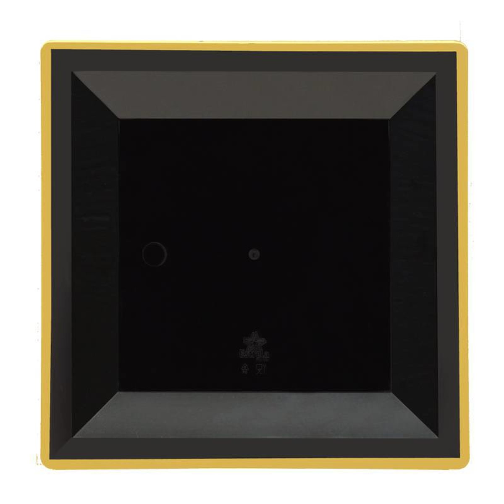

Está sem ideias do que fazer neste periodo de quarentena ?
Aqui vai algumas dicas do que fazer neste periodo, espero que goste
1.Foque no quadrado e percebera um efeito incrivel

Se você focar muito bem neste quadrado, verá que na verdade ele é um triângulo. Viu ???
Se não viu, tente olhar de lado, isso mesmo...
Depois disto, fiz você perder seu tempo nesta quarentena